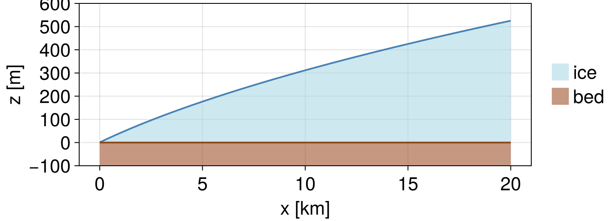

Shakti
Shakti is a transient model, it owns its grid and state and is solved at every time step. FastHydrology only wraps it in ShaktiHydroModel and TimeSimulation, all the physics lives in Shakti.jl, see there for the model, its options and real-data examples.
Both packages export run! and step!, so call them as FastHydrology.run!.
This page is a short version of the Shakti.jl tutorial: the SHMIP ice-sheet margin (de Fleurian et al. 2018), a flat bed under ice that is 1 m thick at the terminus and about 520 m thick 20 km inland, with 1 m/a of melt water from above. It runs when the docs are built: 40 x 10 cells and 30 one-day steps, a few seconds. The tutorial runs a year on an 80 x 20 grid.
using FastHydrology
using Shakti
using CairoMakieGrid and mask
The slab is uniform in y. The terminus at x = 0 is land, an outlet at atmospheric pressure; the other sides are closed (OTHER_BASIN, and the grid edge). Every grounded region needs an outlet.
nx, ny = 40, 10
grid = Shakti.Grid(nx, ny, 20000.0, 5000.0)
mask = fill(Shakti.GROUNDED, nx, ny)
mask[1, :] .= Shakti.LAND
mask[end, :] .= Shakti.OTHER_BASIN
mask[:, [1, end]] .= Shakti.OTHER_BASIN40×2 view(::Matrix{Float64}, :, [1, 10]) with eltype Float64:
3.0 3.0
3.0 3.0
3.0 3.0
3.0 3.0
3.0 3.0
3.0 3.0
3.0 3.0
3.0 3.0
3.0 3.0
3.0 3.0
⋮
3.0 3.0
3.0 3.0
3.0 3.0
3.0 3.0
3.0 3.0
3.0 3.0
3.0 3.0
3.0 3.0
3.0 3.0Geometry and inputs
Flat bed, SHMIP surface, a 1 cm initial gap, 1 m/a of melt, 1e-6 m/s of sliding.
zb = zeros(nx, ny)
zs = [6 * (sqrt(x + 5000.0) - sqrt(5000.0)) + 1 for x in grid.x, y in grid.y]
b = fill(0.01, nx, ny)
A_visc = fill(5e-25, nx, ny)
G = fill(0.05, nx, ny)
ub_x = fill(1e-6, nx + 1, ny)
ub_y = zeros(nx, ny + 1)
ieb = fill(1.0 / (365 * 86400.0), nx, ny)
taub_x, taub_y = zeros(nx + 1, ny), zeros(nx, ny + 1)
p = Shakti.ModelParameters()
mi = Shakti.ConstantMeltInput()
sl = Shakti.RegularizedCoulombSlidingLaw(0.25)
state = Shakti.State(grid)
Shakti.set_initial_conditions!(state, grid, p, sl, mask, A_visc, zb, zs, b, G, ub_x, ub_y, ieb, taub_x, taub_y)Shakti.State{Matrix{Float64}}([0.0 0.0 … 0.0 0.0; 0.0 10.108350034056134 … 10.108350034056134 0.0; … ; 0.0 234.61107120728428 … 234.61107120728428 0.0; 0.0 0.0 … 0.0 0.0], [0.0 0.0 … 0.0 0.0; 0.0 99162.91383409066 … 99162.91383409066 0.0; … ; 0.0 2.301534608543459e6 … 2.301534608543459e6 0.0; 0.0 0.0 … 0.0 0.0], [8927.1 8927.1 … 8927.1 8927.1; 198415.09866818137 198325.82766818133 … 198325.82766818133 198415.09866818137; … ; 4.603158488086917e6 4.603069217086918e6 … 4.603069217086918e6 4.603158488086917e6; 4.690470002228486e6 4.690470002228486e6 … 4.690470002228486e6 4.690470002228486e6], [0.0 0.0 … 0.0 0.0; 0.0 0.01 … 0.01 0.0; … ; 0.0 0.01 … 0.01 0.0; 0.0 0.0 … 0.0 0.0], [0.05 0.05 … 0.05 0.05; 0.05 0.045000000000000005 … 0.045000000000000005 0.05; … ; 0.05 0.045000000000000005 … 0.045000000000000005 0.05; 0.05 0.05 … 0.05 0.05], [0.0 0.0 … 0.0 0.0; 0.0 0.01 … 0.01 0.0; … ; 0.0 0.01 … 0.01 0.0; 0.0 0.0 … 0.0 0.0], [0.0 0.0 … 0.0 0.0; 0.0 5.0e-7 … 5.0e-7 0.0; … ; 0.0 5.0e-7 … 5.0e-7 0.0; 0.0 0.0 … 0.0 0.0], [1.4970059880239523e-7 3.601850543447277e-7 … 3.601850543447277e-7 1.4970059880239523e-7; 1.4970059880239523e-7 1.537182417106969e-6 … 1.537182417106969e-6 1.4970059880239523e-7; … ; 1.4970059880239523e-7 9.324201346014778e-7 … 9.324201346014778e-7 1.4970059880239523e-7; 1.4970059880239523e-7 1.4970059880239523e-7 … 1.4970059880239523e-7 1.4970059880239523e-7], [0.0 0.0 … 0.0 0.0; 0.0 0.024038943998107583 … 0.024038943998107583 0.0; … ; 0.0 0.16222394958538613 … 0.16222394958538613 0.0; 0.0 0.0 … 0.0 0.0], [0.0 1.048477147009554e-5 … 1.048477147009554e-5 0.0; 0.0 6.552887948052051e-5 … 6.552887948052051e-5 0.0; … ; 0.0 1.479528381926801e-5 … 1.479528381926801e-5 0.0; 0.0 0.0 … 0.0 0.0], [-0.0 -0.10285560812163723 … -0.10285560812163723 -0.0; -0.0 -0.6428383077039062 … -0.6428383077039062 -0.0; … ; -0.0 -0.1451417342670196 … -0.1451417342670196 -0.0; -0.0 -0.0 … -0.0 -0.0], [0.0 148.82967623264798 … 148.82967623264798 0.0; 0.0 1005.6214372815759 … 1005.6214372815759 0.0; … ; 0.0 472.0778488403657 … 472.0778488403657 0.0; 0.0 0.0 … 0.0 0.0], [0.0 0.0 … 0.0 0.0; 0.0 0.4156699589930351 … 0.4156699589930351 0.0; … ; 0.0 0.43684799497878873 … 0.43684799497878873 0.0; 0.0 0.0 … 0.0 0.0], [0.05 0.05 … 0.05 0.05; 0.05 0.05 … 0.05 0.05; … ; 0.05 0.05 … 0.05 0.05; 0.05 0.05 … 0.05 0.05], [0.0 0.0 … 0.0 0.0; 0.0 0.0 … 0.0 0.0; … ; 0.0 0.0 … 0.0 0.0; 0.0 0.0 … 0.0 0.0], [0.0 0.0 … 0.0 0.0; 0.0 0.0 … 0.0 0.0; … ; 0.0 0.0 … 0.0 0.0; 0.0 0.0 … 0.0 0.0], [1.0 1.0 … 1.0 1.0; 22.226153921002492 22.226153921002492 … 22.226153921002492 22.226153921002492; … ; 515.6387279280973 515.6387279280973 … 515.6387279280973 515.6387279280973; 525.4192293385854 525.4192293385854 … 525.4192293385854 525.4192293385854], [1.0 1.0 … 1.0 1.0; 22.226153921002492 22.21615392100249 … 22.21615392100249 22.226153921002492; … ; 515.6387279280973 515.6287279280973 … 515.6287279280973 515.6387279280973; 525.4192293385854 525.4192293385854 … 525.4192293385854 525.4192293385854], [3.1709791983764586e-8 3.1709791983764586e-8 … 3.1709791983764586e-8 3.1709791983764586e-8; 3.1709791983764586e-8 3.1709791983764586e-8 … 3.1709791983764586e-8 3.1709791983764586e-8; … ; 3.1709791983764586e-8 3.1709791983764586e-8 … 3.1709791983764586e-8 3.1709791983764586e-8; 3.1709791983764586e-8 3.1709791983764586e-8 … 3.1709791983764586e-8 3.1709791983764586e-8], [7.499999999999999e-25 7.499999999999999e-25 … 7.499999999999999e-25 7.499999999999999e-25; 7.499999999999999e-25 7.499999999999999e-25 … 7.499999999999999e-25 7.499999999999999e-25; … ; 7.499999999999999e-25 7.499999999999999e-25 … 7.499999999999999e-25 7.499999999999999e-25; 7.499999999999999e-25 7.499999999999999e-25 … 7.499999999999999e-25 7.499999999999999e-25], [5.0e-25 5.0e-25 … 5.0e-25 5.0e-25; 5.0e-25 5.0e-25 … 5.0e-25 5.0e-25; … ; 5.0e-25 5.0e-25 … 5.0e-25 5.0e-25; 5.0e-25 5.0e-25 … 5.0e-25 5.0e-25], [0.0 0.0 … 0.0 0.0; 0.0 99162.91383409066 … 99162.91383409066 0.0; … ; 0.0 2.301534608543459e6 … 2.301534608543459e6 0.0; 0.0 0.0 … 0.0 0.0], [3.0 2.0 … 2.0 3.0; 3.0 0.0 … 0.0 3.0; … ; 3.0 0.0 … 0.0 3.0; 3.0 3.0 … 3.0 3.0], [0.0 0.0 … 0.0 0.0; 0.0 0.01971128256640946 … 0.01971128256640946 0.0; … ; 0.0 -0.0 … -0.0 0.0; 0.0 0.0 … 0.0 0.0], [-0.0 -0.0 … -0.0 -0.0; -0.0 -0.0010638345257109679 … -0.0010638345257109679 -0.0; … ; -0.0 0.0 … 0.0 -0.0; -0.0 -0.0 … -0.0 -0.0], [0.0 0.0 … 0.0 0.0; 0.0 595.3187049305919 … 595.3187049305919 0.0; … ; 0.0 0.0 … 0.0 0.0; 0.0 0.0 … 0.0 0.0], [0.0 0.0 … 0.0 0.0; 0.0 0.005 … 0.005 0.0; … ; 0.0 0.005 … 0.005 0.0; 0.0 0.0 … 0.0 0.0], [0.0 0.0 … 0.0 0.0; 0.0 0.0 … 0.0 0.0; … ; 0.0 0.0 … 0.0 0.0; 0.0 0.0 … 0.0 0.0], [0.0 0.0 … 0.0 0.0; 0.0 0.0 … 0.0 0.0; … ; 0.0 0.0 … 0.0 0.0; 0.0 0.0 … 0.0 0.0], [0.0 0.0 … 0.0 0.0; 0.0 193.3676819764768 … 193.3676819764768 0.0; … ; 0.0 -0.0 … -0.0 0.0; 0.0 0.0 … 0.0 0.0], [0.0 0.0 … 0.0 0.0; 0.0 0.0 … 0.0 0.0; … ; 0.0 0.0 … 0.0 0.0; 0.0 0.0 … 0.0 0.0], [1.0 1.0 … 1.0 1.0; 0.0 1.0 … 1.0 0.0; … ; 0.0 0.0 … 0.0 0.0; 1.0 1.0 … 1.0 1.0], [0.0 0.0 … 0.0 0.0; 0.0 0.0 … -0.0 0.0; … ; 0.0 0.0 … -0.0 0.0; 0.0 0.0 … 0.0 0.0], [-0.0 -0.0 … -0.0 -0.0; -0.0 -0.0 … 0.0 -0.0; … ; -0.0 -0.0 … 0.0 -0.0; -0.0 -0.0 … -0.0 -0.0], [0.0 0.0 … 0.0 0.0; 0.0 0.0 … 0.0 0.0; … ; 0.0 0.0 … 0.0 0.0; 0.0 0.0 … 0.0 0.0], [0.0 0.0 … 0.0 0.0; 0.0 0.005 … 0.005 0.0; … ; 0.0 0.005 … 0.005 0.0; 0.0 0.0 … 0.0 0.0], [0.0 0.0 … 0.0 0.0; 0.0 0.0 … 0.0 0.0; … ; 0.0 0.0 … 0.0 0.0; 0.0 0.0 … 0.0 0.0], [0.0 0.0 … 0.0 0.0; 0.0 0.0 … 0.0 0.0; … ; 0.0 0.0 … 0.0 0.0; 0.0 0.0 … 0.0 0.0], [0.0 0.0 … 0.0 0.0; 0.0 0.0 … -0.0 0.0; … ; 0.0 0.0 … -0.0 0.0; 0.0 0.0 … 0.0 0.0], [0.0 0.0 … 0.0 0.0; 0.0 0.0 … 0.0 0.0; … ; 0.0 0.0 … 0.0 0.0; 0.0 0.0 … 0.0 0.0], [1.0 0.0 … 0.0 1.0; 1.0 0.0 … 0.0 1.0; … ; 1.0 0.0 … 0.0 1.0; 1.0 0.0 … 0.0 1.0])The geometry along x.
xkm = grid.x ./ 1e3
geo = Figure(size = (720, 260))
axg = Axis(geo[1, 1]; xlabel = "x [km]", ylabel = "z [m]")
band!(axg, xkm, zb[:, 1], zs[:, 1]; color = (:lightblue, 0.6), label = "ice")
band!(axg, xkm, fill(-100.0, nx), zb[:, 1]; color = (:sienna, 0.6), label = "bed")
lines!(axg, xkm, zs[:, 1]; color = :steelblue, linewidth = 2)
lines!(axg, xkm, zb[:, 1]; color = :saddlebrown, linewidth = 2)
ylims!(axg, -100, 600)
Legend(geo[1, 2], axg; framevisible = false)
geo
Wrap and run
The default sheet (a head below the bed empties the cavity, water above the overburden lifts the ice) has a non-symmetric head matrix, so it needs an LU solver. Step through with FastHydrology.step! and keep the fields at a few days: N [Pa], the gap height b [m] and the Reynolds number Re.
nsteps, dt = 30, 86400.0
ls = Shakti.LUDirectSolver(grid)
ps = Shakti.PicardSolver(200, 1e-6, ls, grid)
shakti_sim = Shakti.Simulation(grid, state, nsteps, dt, p, String[], mi, sl; ps = ps)
time_sim = TimeSimulation(ShaktiHydroModel(shakti_sim))
frames = [1, 3, 10, 30]
snap = Dict{Int, NamedTuple}()
for k in 1:nsteps
FastHydrology.step!(time_sim)
k in frames && (snap[k] = (N = Array(state.N), b = Array(state.b), Re = Array(state.Re)))
endPlot
A profile along x through the middle row, grounded cells only. N goes to zero at the outlet, where the ice is thin and the water drains at atmospheric pressure. The gap opens near the terminus, where the flux is largest, and closes inland; it needs about 100 days to settle, so 30 days shows the start of it.
gr = Array(state.mask) .== Shakti.GROUNDED
jm = ny ÷ 2
ix = findall(gr[:, jm])
colors = cgrad(:viridis, length(frames); categorical = true)
fig = Figure(size = (720, 640))
rows = [("N [MPa]", s -> s.N[ix, jm] ./ 1e6, identity),
("b [mm]", s -> s.b[ix, jm] .* 1e3, identity),
("Re", s -> s.Re[ix, jm], log10)]
for (r, (name, f, scale)) in enumerate(rows)
ax = Axis(fig[r, 1]; ylabel = name, yscale = scale,
xlabel = r == 3 ? "x [km]" : "", xticklabelsvisible = r == 3)
for (c, k) in enumerate(frames)
lines!(ax, xkm[ix], f(snap[k]); color = colors[c], linewidth = 2, label = "day $k")
end
r == 2 && Legend(fig[1:3, 2], ax; framevisible = false)
end
rowgap!(fig.layout, 8)
fig